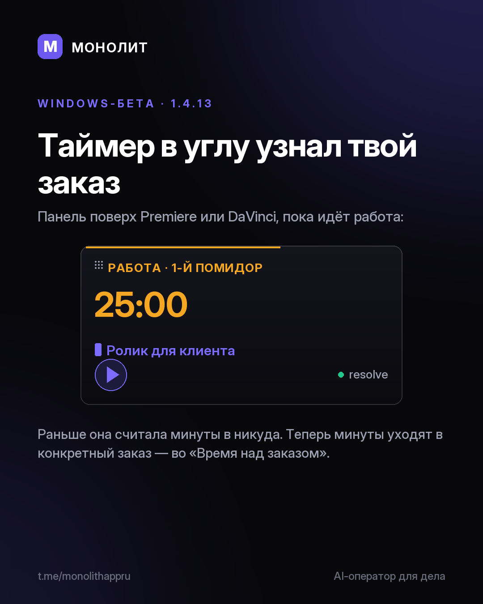

Дневник разработки · 23.07.2026
Таймер в углу узнал твой заказ (1.4.13 beta)

Таймер в углу знал только время. Теперь знает и заказ
Компактная панель висит поверх Premiere или DaVinci, пока идёт работа. Раньше она честно считала минуты, но в никуда: время копилось общей кучей, не привязанное к проекту.
Теперь под таймером есть строка «на что пишем время». Жмёшь — панель показывает активные заказы, выбираешь нужный. Минуты уходят прямо в него, во «Время над заказом». «Личное» стоит первым: отвязаться от заказа так же просто, как привязаться.
Запуск — за секунду
Раньше запуск держал чёрный экран десятки секунд, окно успевало написать «не отвечает». Разобрались, что его подвешивало, и убрали. Теперь окно открывается сразу, с живым загрузчиком.
Вход стал плавным
Верный пароль больше не бросает в приложение рывком — оно поднимается анимацией. И закрывается так же спокойно.
Windows-бета 1.4.13. Уже установлено — обновится само, качать ничего не надо. В первый раз: сайт · вопросы @sbphotoshoter
МОНОЛИТ — учёт заказов, клиентов и денег одной фразой. Windows и Android, бесплатная бета.
Скачать Читать канал